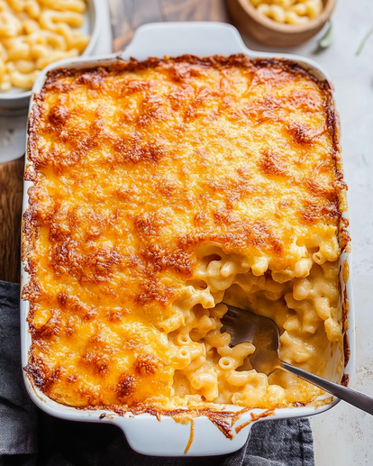

Mac and Cheese Recipe

This recipe is cheesy and delicous. Its also easy to make and budget friendly. if you are looking for a good meal to make that is easy and feeds the whole family, here you go!
Recipe
- 1 box of Macaroni
- 1 block of cheddar cheese
- 6 cups of shredded Cheddar Cheese
- 1 pint of heavy cream or whole milk
- butter
- 1 Tbs of all purpose-flour
Steps
- In a large pot, boil the Macaroni for about 7-10 minutes, until al dente or desired tenderness.
- Take your cheddar cheese blocks and cut them into 1 inch cubes. Save for later.
- In a large sauce pan, make the rue: this is done by melting equal parts butter and equal parts flour.
- Take 1Tbs of butter and 1 Tbps flour.Place butter into sauce pan
- as the butter is almost done melting slowly stir in the flour until you get a thicken mixture.
- Once the mixture has thickened and is fully incorporated, add in your milk / heavy cream
.
- Now that your rue is done, you may now add in your cheddar cheese cubes that you cut from earlier. Stir until completely melted.
- Once melted, you may add your shredded cheese to get the consistency that you want. For this recipe, you may add 2 cups of shredded cheese. Should be a thick but smooth texture.
Recipe Book